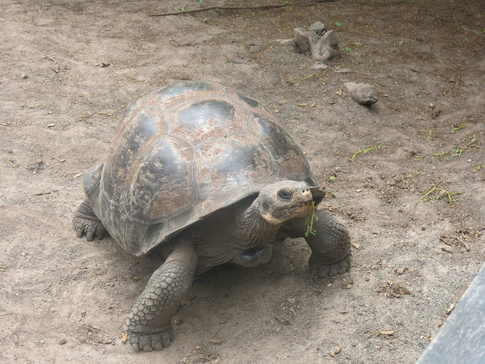
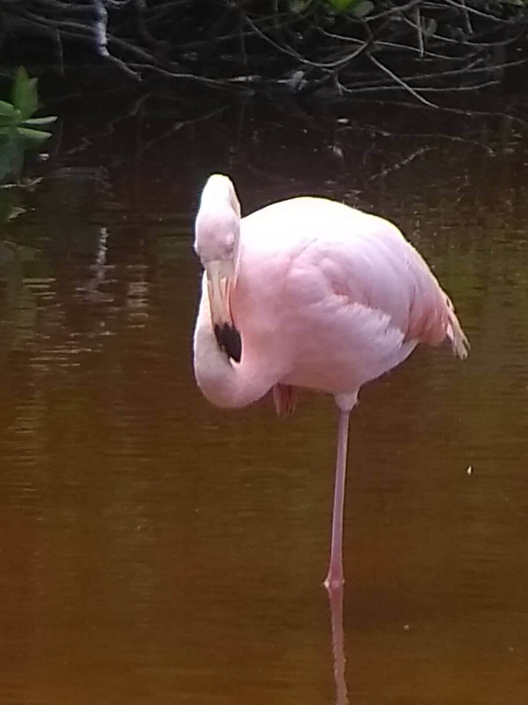
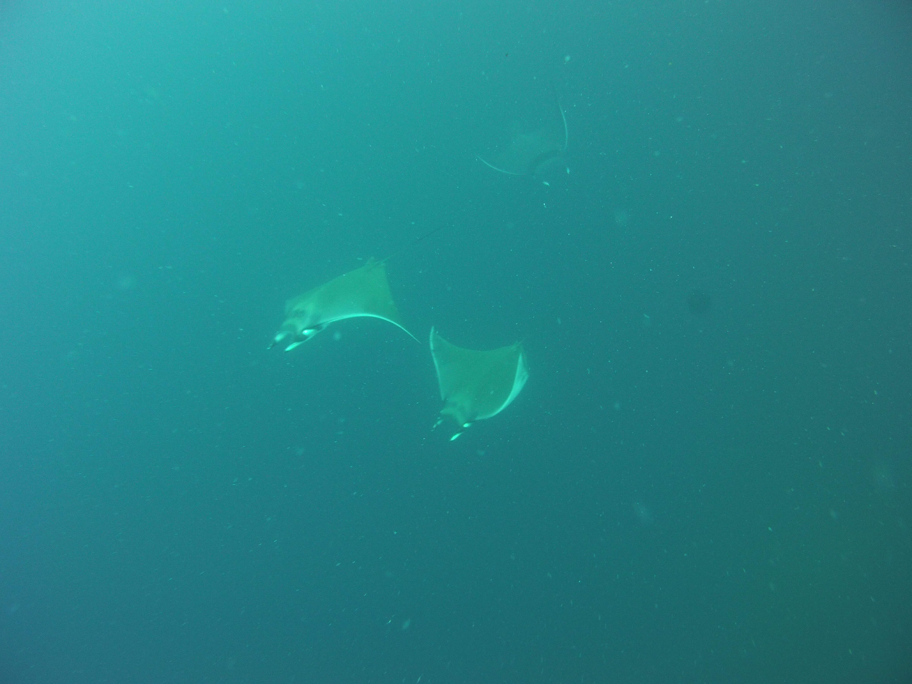
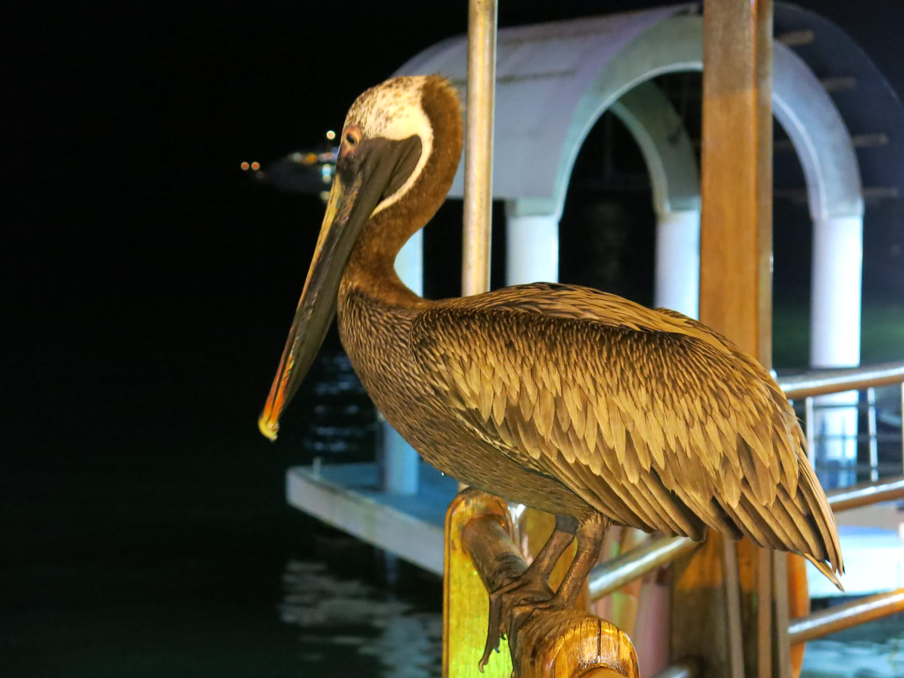
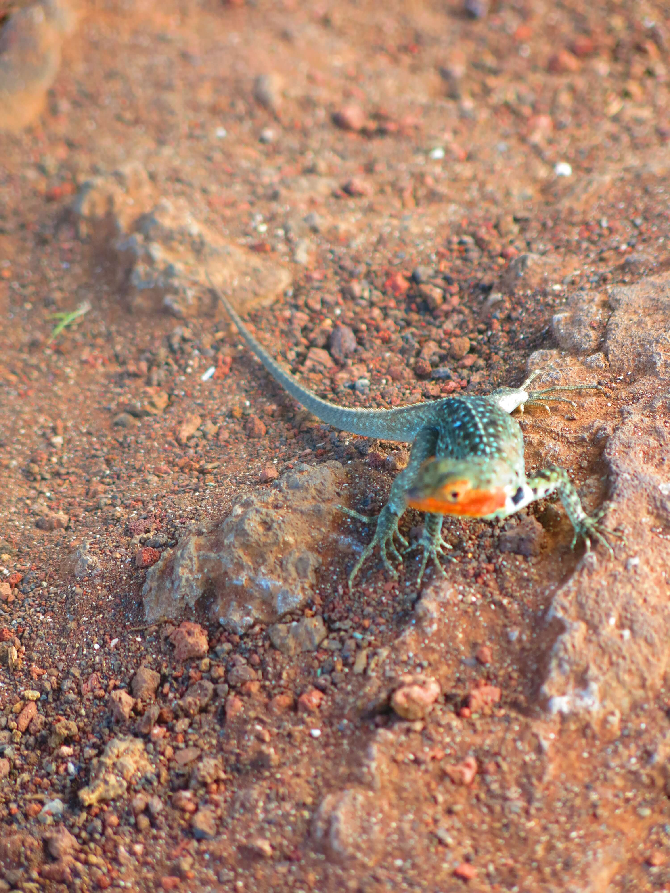
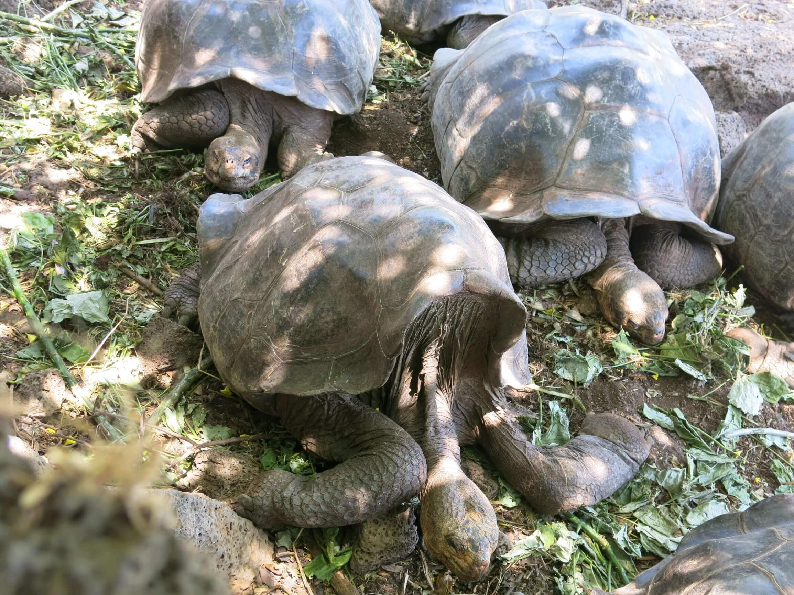
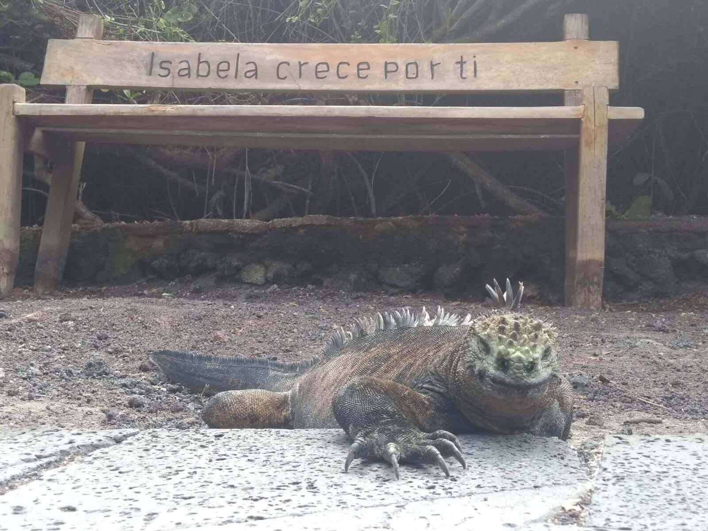
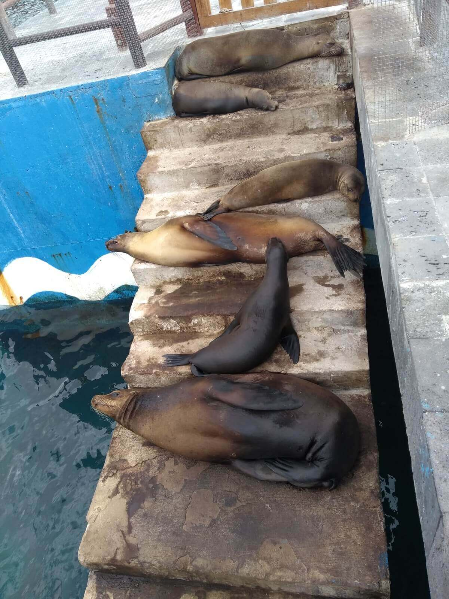

Pelicans fighting over fish carcasses at the Puerto Ayora Fish Market
Lunchtime at the El Chato Reserve on Santa Cruz
A lone flamingo relaxes in the brackish waters of Flamingo lake on Isabla Island
Two sealion pups having a break from playtime
Three golden rays 'flying' through the water off of Santa Cruz
On the hunt! A pelican looks out for a fishy dinner
A male blue footed boobie trying to impress a female with his dance moves
A skink poses on the lookout point above the Wall of Tears
Pinta giant tortoises having a well deserved snooze in the sun
White Tip Reef sharks can be seen in the waters around Gordon Rocks
This iguana might look fierce, but he just wants to chill
Sealions love relaxing in the sun, helping them to warm up after the chilly waters